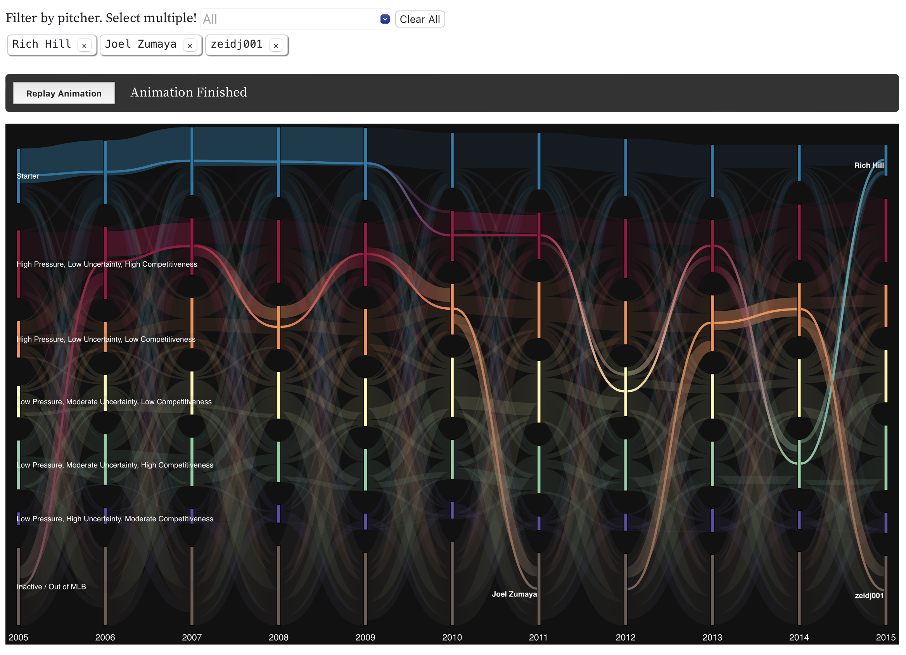

human-centered strategist, public-interest technologist, and data experience designer
Human-Centered Strategist | Public-Interest Technologist | Data Experience Designer
I design at the intersection of technology, data, and complex systems.
With a background in engineering and product management, I’ve led global teams building complex software systems for testing and data-driven decision making in highly regulated, safety-critical contexts. I expanded my practice from to include design strategy and civic systems, focusing on translating system and institutional complexity along with human experiences into shared understanding and coordinated action.
I am currently pursuing a Master of Design (MDes) and a Master of Public Adminsitration (MPA) from the Institute of Design and Stuart School of Business at Illinois Institute of Technology. I hold a Bachelors of Science in Mechanical Engineering from the University of Minnesota.
Selected Projects

Data and Baseball Bullpens: Complexity and Overlooked Experiences
Data experience design that explains and questions baseball's analytical approach to bullpens, explains data literacy and machine learning algorithm concepts, and entices and inspires baseball fans to dive deepner into data.
Originally trained as a mechanical engineer, I spent several years as an applications engineer at a test and measurement company supporting engineers develop test systems and plans across automotive, aerospace, and semiconductor industries. With that customer knowledge, I moved into technical product management leading global teams across the U.S., Romania, and India to develop software for embedded software test primarily for usage by large automotive and aerospace organizations.
From there, I expanded my practice to include design strategy and civic systems , allowing me to bridge technical expertise with social and organizational impact.